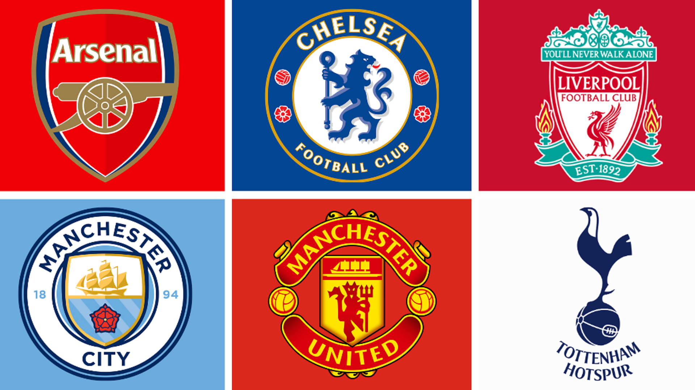

2026 FIFA World Cup: Monte Carlo Engine
Simulating 1,000 parallel FIFA World Cup realities using Hierarchical Bayesian Modeling,
MCMC sampling, and empirical penalty smoothing.
Data Scientist specialising in machine learning and multivariate statistics. Experienced in leveraging R, SQL, and Python
to transform complex datasets into actionable structural insights.
Simulating 1,000 parallel FIFA World Cup realities using Hierarchical Bayesian Modeling,
MCMC sampling, and empirical penalty smoothing.

A multivariate study using PCA and K-Means clustering to quantify the structural divide between the "Big Six" and the rest of the English top flight.

Scraped performance data for 100+ Ligue 1 defenders to identify undervalued transfer targets using Python and Pandas.

Cleaned and standardised a messy global dataset of 2,000+ business layoffs using MySQL to prepare for exploratory trend analysis.